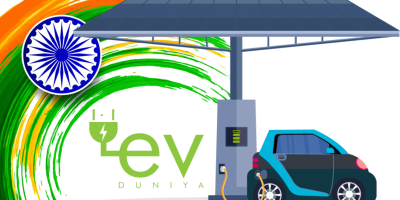
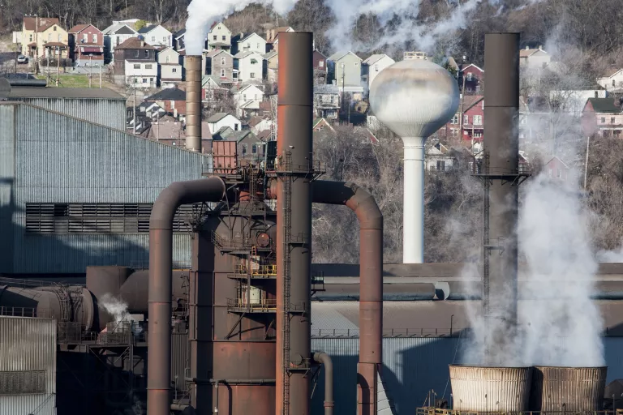
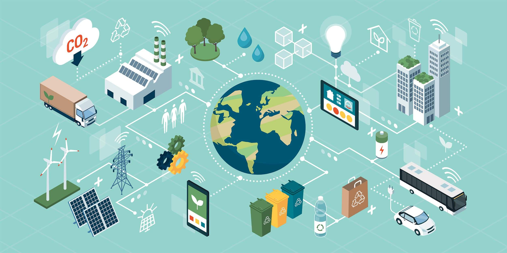

8. Sustainable Transportation
Transportation is a top source of greenhouse gases (GHG), so eliminating pollution from the billions of vehicles driving across the planet is essential to achieving net-zero global emissions by 2050, a goal laid out in the 2015 Paris climate agreement.
In 2021, electric vehicles (EVs) accounted for less than 8 percent of vehicle sales globally; by 2035, however, it’s estimated that they’ll account for more than half of all new sales. Governments around the world aren’t just anticipating an all-electric future; they’re bringing it into fruition by setting goals and binding requirements to phase out the sale of gas-powered internal combustion engine (ICE) vehicles. That year, 2035, is expected to mark a turning point in the adoption of EVs and in the fight against climate change as countries around the world—as well as numerous automakers—have announced goals to phase out gas-powered cars and light trucks. This shift will also benefit our grid: EVs are like a “battery on wheels” and have the potential to supply electricity back to the network when demand peaks, helping to prevent blackouts.

It’s also critical that we consider all of the different ways we get around and build sustainability into each of them. By increasing access to public transportation—such as buses, ride-sharing services, subways, and streetcars—as well as embracing congestion pricing, we can cut down on car trips and keep millions of tons of carbon dioxide out of the atmosphere every year. And by encouraging zero-emission forms of transportation, such as walking and biking, we can reduce emissions even more. Boosting these alternate forms of transportation will require more than just talk. They require funding, planning, and the building out of supportive infrastructure by leaders across the local, state, and national levels.
To address the full set of impacts of the transportation sector, we need holistic and community-led solutions around things like land-use policies and the way we move consumer goods. Communities closest to ports, truck corridors, rail yards, and warehouses are exposed to toxic diesel emissions and face a high risk of developing acute and chronic public health diseases. Like all climate solutions, long-lasting change in the transportation sector requires building the power of historically marginalized communities.

9. Sustainable Buildings
The energy used in our buildings—to keep the lights on and appliances running; to warm them and cool them; to cook and to heat water—makes them the single-largest source of carbon pollution in most cities across the United States. Making buildings more energy efficient, by upgrading windows and adding insulation to attics and walls, for example, will bring these numbers down. That’s why it’s all the more important that we raise public awareness of cost- and carbon-saving changes that individuals can make in their homes and workplaces, and make it easier for people to purchase and install energy-efficient technology, such as heat pumps (which can both heat and cool spaces) and certified appliances through programs like Energy Star in the United States or EnerGuide in Canada.

Beyond the measures that can be taken by individuals, we need to see a dedication from private businesses and governments to further building decarbonization, which simply means making buildings more efficient and replacing fossil fuel–burning systems and appliances with clean-powered ones. Policy tools can help get us there, including city and state mandates that all newly constructed homes, offices, and other buildings be outfitted with efficient all-electric systems for heating, cooling, and hot water; requirements that municipalities and states meet the latest and most stringent energy conservation standards when adopting or updating their building codes would also be impactful. Indeed, many places around the world are implementing building performance standards, which require existing buildings to reduce their energy use or carbon emissions over time. Most important, if these changes are going to reach the scale needed, we must invest in the affordable housing sector so that efficient and decarbonized homes are accessible to homeowners and renters of all incomes.

10. Better Forestry Management and Sustainable Agriculture
Some of our strongest allies in the fight against climate change are the trees, plants, and soil that store massive amounts of carbon at ground level or underground. Without the aid of these carbon sinks, life on earth would be impossible, as atmospheric temperatures would rise to levels more like those found on Venus.
But whenever we clearcut forests for timber or rip out wetlands for development, we release that climate-warming carbon into the air. Similarly, the widespread overuse of nitrogen-based fertilizers (a fossil fuel product) on cropland and generations of industrial-scale livestock farming practices have led to the release of unprecedented amounts of nitrous oxide and methane, powerful greenhouse gases, into our atmosphere.
We can’t plant new trees fast enough to replace the ones we clearcut in carbon-storing forests like the Canadian boreal or the Amazon rainforest—nor can rows of spindly young pines serve the same function as old-growth trees. We need a combination of responsible forestry policies, international pressure, and changes in consumer behavior to put an end to deforestation practices that not only accelerate climate change but also destroy wildlife habitat and threaten the health and culture of Indigenous communities that live sustainably in these verdant spaces. At the same time, we need to treat our managed landscapes with as much care as we treat wild ones. For instance, adopting practices associated with organic and regenerative agriculture—cover crops, pesticide use reduction, rotational grazing, and compost instead of synthetic fertilizers—will help nurture the soil, yield healthier foods, and pay a climate dividend too.
11. Conservation-Based Solutions
Intact ecosystems suck up and store vast amounts of carbon: Coastal ecosystems like wetlands and mangroves accumulate and store carbon in their roots; our forests soak up about a third of annual fossil fuel emissions; and freshwater wetlands hold between 20 and 30 percent of all the carbon found in the world’s soil. It’s clear we’re not going to be able to address climate change if we don’t preserve nature.
This is one reason why, along with preserving biodiversity, climate experts are calling on global leaders to fully protect and restore at least 30 percent of land, inland waters, and oceans by 2030, a strategy endorsed by the Intergovernmental Panel on Climate Change. To help us reach that goal, we must limit industrial impacts on our public lands and waters, continue to protect natural landscapes, support the creation of marine protected areas, uphold bedrock environmental laws, and follow the lead of Indigenous Peoples, many of whom have been faithfully and sustainably stewarding lands and waters for millennia.
11. Industrial Solutions

Heavy industry—the factories and facilities that produce our goods—is responsible for a quarter of GHG emissions in the United States and 40 percent globally. Most industrial emissions come from making a small set of carbon-intensive products: basic chemicals, iron and steel, cement, aluminum, glass, and paper. (Industrial plants are also often major sources of air and water pollutants that directly affect human health.)
Complicating matters is the fact that many industrial plants will stay in operation for decades, so emissions goals for 2050 are really just one investment cycle away. Given these long horizons for building and retrofitting industrial sites, starting investments and plans now is critical. What would successfully decarbonized industrial processes look like? They should sharply reduce heavy industry’s climate emissions, as well as local pollution. They should be scalable and widely available in the next decade, especially so that less developed nations can adopt these cleaner processes and grow without increasing emissions. And they should bolster manufacturing in a way that creates good jobs.
12. Technological Solutions
Technology alone won’t save us from climate change (especially not some of these risky geoengineering proposals). But at the same time, we won’t be able to solve the climate crisis without researching and developing things like longer-lasting EV batteries, nonpolluting hydrogen-based solutions, and reliable, safe, and equitable methods for capturing and sequestering carbon. Because, while these tools hold promise, we have to make sure we don’t repeat the mistakes of the past. For instance, we can take actions to reduce local harms from mining lithium (a critical component of electric vehicle batteries), improve recycling opportunities for solar cells, and not use carbon capture as an excuse to pollute. To accelerate research and development, funding is the critical third leg of the stool: Governments must make investing in clean energy technologies a priority and spur innovation through grants, subsidies, tax incentives, and other rewards.

13. Our Choices

Finally, it should go without saying that we, as individuals, are key to solving the climate crisis—not just by continuing to lobby our legislators and speak up in our communities but also by taking climate actions in our daily lives. By switching off fossil fuels in our homes and being more mindful of the climate footprint of the food we eat, our shopping habits, how we get around, our use of plastics and fossil fuels, and what businesses we choose to support (or not to support), we can move the needle.
But it’s when we act collectively that real change happens—and we can do even more than cut down on carbon pollution. Communities banding together have fought back fracking, pipelines, and oil drilling in people’s backyards. These local wins aren’t just good news for our global climate but they also protect the right to clean air and clean water for everyone. After all, climate change may be a global crisis but climate action starts in your own hometown.
We have a responsibility to consider the implications of our choices—and to make sure that these choices are actually helping to reduce the burdens of climate change, not merely shifting them somewhere else. It’s important to remember that the impacts of climate change—which intersect with and intensify so many other environmental, economic, and social issues—fall disproportionately on certain communities, namely low-income communities and communities of color. That’s why our leaders have a responsibility to prioritize the needs of these communities when crafting climate policies. If those on the frontlines aren’t a part of conversations around climate solutions, or do not feel the benefits of things like cleaner air and better job opportunities, then we are not addressing the roots of the climate crisis.
Conclusion
Climate change is one of the most significant global challenges of our time, and its impacts are being felt across the world. It is caused primarily by the release of greenhouse gases (GHGs) into the atmosphere, mostly from human activities such as burning fossil fuels, deforestation, and agriculture. The good news is that there are solutions to address climate change, and many of them are available today.
The most effective solutions to climate change involve reducing GHG emissions, transitioning to renewable energy sources, improving energy efficiency, increasing the use of electric vehicles, and reducing waste. Governments, businesses, and individuals all have a role to play in addressing climate change.
Governments can set policies and regulations to limit GHG emissions and encourage the adoption of clean technologies. Businesses can adopt sustainable practices and invest in renewable energy sources. Individuals can reduce their carbon footprint by conserving energy, using public transportation, eating a plant-based diet, and supporting climate-friendly policies.
In conclusion, addressing climate change requires a collective effort from all sectors of society. We must take urgent action to reduce GHG emissions and transition to a sustainable, low-carbon economy. By doing so, we can help mitigate the impacts of climate change and build a more resilient and sustainable future for ourselves and future generations.

.jpg)